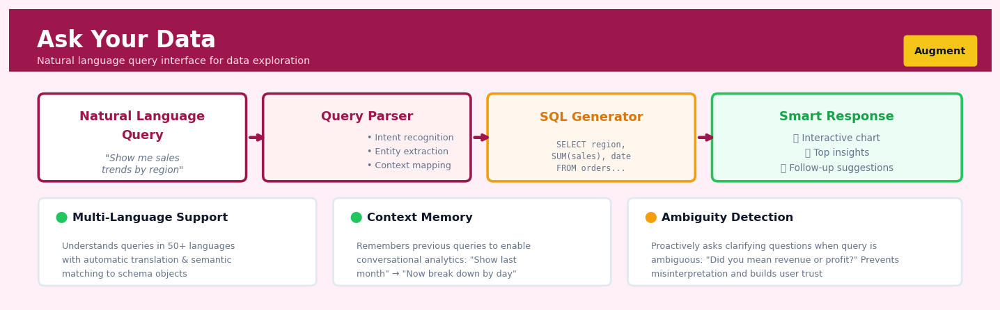

Ask Your Data#


The most common mistake teams make with Ask Your Data is treating it as a replacement for data literacy rather than a complement to it. When users don't understand their underlying data model, they'll ask questions the system can technically answer but that are analytically meaningless, like comparing metrics across incompatible time periods or aggregation levels. Always pair natural language interfaces with lightweight schema documentation and validation guardrails that warn users when their query might produce misleading results.
The 60-Second Version#
What it does: Ask Your Data lets you query databases by typing questions in plain English instead of writing SQL code.
When to use it: Use it when business users need fast answers from structured data without waiting for technical teams to write reports.
What you get back: You receive query results (tables, charts, numbers) that directly answer your question, ready to inform decisions or spark follow-up questions.
At a Glance
Difficulty |
Easy |
Typical runtime |
Seconds on millions of rows |
What you bring |
A structured database and questions in plain English |
What you get |
Query results as tables, visualisations, or summary statistics |
Heuristix bucket |
Augment — AI & Language Intelligence |
The system translates your intent, not your expertise—always verify results on critical decisions, because the model can misinterpret ambiguous questions or unfamiliar database structures.
Learning Objectives#
After reading this chapter, a business user will be able to:
Identify which business questions are well-suited for Ask Your Data versus those requiring traditional reporting or manual analysis, based on data structure and question complexity.
Interpret natural language query results by verifying whether the generated SQL logic matches the intended business question and explaining any discrepancies to stakeholders.
Decide when to trust an automated query result versus escalating to a data analyst, using confidence indicators and cross-checks against known business metrics.
After reading this chapter, a data scientist will be able to:
Implement an Ask Your Data system by connecting an LLM to a structured database with appropriate schema context, few-shot examples, and query execution safeguards.
Tune key configuration parameters—including schema description detail, example query selection, and temperature settings—while balancing accuracy, response time, and computational cost.
Validate query correctness through systematic testing approaches and diagnose common failure patterns such as ambiguous column references, incorrect aggregations, and hallucinated table names.
Overview#
Ask Your Data is a natural language interface that translates plain-English questions into executable analytical queries against structured datasets. It belongs to the family of Text-to-SQL and semantic parsing methods within natural language processing, leveraging large language models (LLMs) to bridge the gap between human intent and formal query languages. The core purpose is to democratise data access by enabling users without SQL expertise to retrieve, aggregate, and analyse data through conversational interaction.
When to Use This#
Use Ask Your Data when:
Ad-hoc exploratory analysis: Business users need quick answers to one-off questions without waiting for analyst support or learning query syntax. Example: “What was our total revenue in Q3 by region?”
Self-service business intelligence: Organisations want to reduce the backlog of data requests by empowering non-technical stakeholders to interrogate data directly.
Rapid hypothesis testing: Analysts want to quickly validate hunches before investing time in formal analysis—the natural language interface accelerates iteration.
Data democratisation initiatives: When the strategic goal is to make data accessible across the organisation, regardless of technical skill level.
Augmenting existing dashboards: When static reports cannot anticipate every question stakeholders might ask, and dynamic querying adds value.
Training and onboarding: New team members can explore unfamiliar datasets by asking questions in natural language, building intuition before learning the schema.
Do NOT use Ask Your Data when:
Mission-critical production queries: Automated pipelines requiring guaranteed correctness should use validated, version-controlled SQL—not LLM-generated queries.
Complex multi-step transformations: Queries requiring CTEs, window functions with intricate partitioning, or recursive queries may exceed the reliable capability of semantic parsing.
Sensitive data without governance: If the underlying data contains PII or confidential information, ensure appropriate access controls exist before enabling natural language access.
When exact reproducibility is required: LLM outputs can vary; for audit trails requiring deterministic queries, use traditional SQL development workflows.
Questions This Answers#
Performance Diagnostics & Root Cause Analysis#
Why did revenue in our flagship product line drop 22% in Q3 while competitors grew?
Which customer segments stopped buying from us between January and March, and what do they have in common?
Are our marketing campaigns actually driving sales, or are we just burning budget on the wrong channels?
What’s causing the spike in customer complaints in the Midwest region — is it product quality, delivery times, or something else?
Why are we losing deals at the proposal stage in enterprise accounts but closing well with mid-market clients?
Strategic Planning & Forecasting#
If we maintain current growth trends, will we hit our $50M revenue target by year-end?
Which three product categories should we prioritize for inventory expansion heading into holiday season?
Should we double down on digital advertising or shift more budget to field sales based on what’s actually working?
What would happen to our churn rate if we increased customer success touchpoints from quarterly to monthly?
Are we better off acquiring new customers or investing in retention programs for our existing base?
Operational Efficiency & Comparison#
Which sales territories are generating the highest revenue per rep, and what are the top performers doing differently?
Is our New York warehouse more cost-effective than outsourcing to third-party logistics?
How does customer lifetime value compare between subscribers acquired through paid search versus organic social?
Which support channels resolve issues fastest while maintaining quality — chat, phone, or email?
How It Works#
Imagine you’re at a busy restaurant where the kitchen staff only speak Italian, but you only speak English. You tell the waiter “I’d like the grilled fish with no butter, extra lemon, and a side salad instead of fries.” The waiter doesn’t just repeat your words to the kitchen—they translate your request into precise Italian culinary instructions: “Pesce alla griglia, senza burro, limone doppio, insalata al posto delle patatine.” The kitchen executes those instructions perfectly, and you get exactly what you wanted without learning a word of Italian. Ask Your Data is that waiter, translating your plain-English questions into the precise language (SQL) that databases understand.
┌─────────────────────────────────────────────────────────┐
│ STEP 1: Natural Language Question │
│ "What were our top 3 products by revenue last month?" │
└─────────────────┬───────────────────────────────────────┘
│
↓
┌─────────────────────────────────────────────────────────┐
│ STEP 2: Understanding Phase (LLM analyzes) │
│ • Intent: Find products, ranked by revenue │
│ • Time filter: Last month │
│ • Aggregation: Sum revenue, limit to top 3 │
└─────────────────┬───────────────────────────────────────┘
│
↓
┌─────────────────────────────────────────────────────────┐
│ STEP 3: Schema Mapping │
│ products.name → "products" │
│ orders.total → "revenue" │
│ orders.date → "last month" filter │
└─────────────────┬───────────────────────────────────────┘
│
↓
┌─────────────────────────────────────────────────────────┐
│ STEP 4: Generated SQL Query │
│ SELECT product_name, SUM(total) as revenue │
│ FROM orders WHERE date >= '2024-03-01' │
│ GROUP BY product_name ORDER BY revenue DESC LIMIT 3 │
└─────────────────┬───────────────────────────────────────┘
│
↓
┌─────────────────────────────────────────────────────────┐
│ STEP 5: Result │
│ ┌──────────────┬──────────┐ │
│ │ Product │ Revenue │ │
│ ├──────────────┼──────────┤ │
│ │ Laptop Pro │ $45,200 │ │
│ │ Wireless Hub │ $38,900 │ │
│ │ USB-C Cable │ $12,400 │ │
│ └──────────────┴──────────┘ │
└─────────────────────────────────────────────────────────┘
Parse the question. The system first breaks down your natural language question into its core components—what data you want, what filters to apply, and what calculations to perform. It identifies keywords like “top,” “revenue,” and “last month” to understand your intent.
Map to database structure. Next, the system examines your actual database schema—table names, column names, relationships between tables. It matches the concepts in your question (like “products” and “revenue”) to the actual technical names in your database (perhaps “product_name” and “order_total”).
Generate the SQL query. Using the parsed intent and schema mapping, the large language model constructs a formal SQL query that captures exactly what you asked for. It knows that “top 3” means adding a LIMIT clause, “by revenue” requires summing and sorting, and “last month” needs a date filter.
Execute and verify. The generated SQL runs against your database. Modern systems often include a validation step—checking if the query syntax is correct and if the results make logical sense before presenting them to you.
Present results in context. Finally, the system returns the data in an easy-to-read format, often with a natural language summary like “Here are your top 3 products by revenue for March 2024.”
The key insight: Ask Your Data works because large language models have learned the statistical patterns linking how humans describe data questions to how databases formally structure those same questions, effectively functioning as learned translators between human intent and machine-executable logic.
The Intuition#
Imagine you have hired a highly intelligent assistant who is fluent in both English and SQL, and who has memorised the complete schema of your database—every table, column, data type, and relationship. When you ask a question like “Show me the top 10 customers by lifetime value,” this assistant mentally translates your intent into the precise SQL syntax required, executes it, and returns the results. Ask Your Data replicates this assistant using a large language model that has been trained on vast corpora of natural language and SQL pairs.
The key insight is that natural language questions about data have latent structure. When someone asks “What is the average order value by product category?”, there is an implicit specification: we need an aggregation function (AVG), a measure column (order value), a grouping dimension (product category), and a source table (orders joined to products). The LLM’s role is to recover this latent structure and express it in the formal grammar of SQL. This is fundamentally a translation problem—from the ambiguous, context-dependent language of humans to the precise, unambiguous language of databases.
The system works because modern LLMs have learned statistical associations between natural language patterns and SQL constructs during pre-training. When fine-tuned or prompted with schema information, they can generalise these patterns to new databases they have never seen. The magic is not that the model “understands” your database—it does not. Rather, it understands the mapping between how humans describe data operations and how those operations are expressed in SQL. By providing the schema as context, we give the model enough information to construct a syntactically valid and semantically plausible query. The remaining challenge is ensuring that “plausible” aligns with “correct.”
The Mathematics#
Problem Formulation#
Let \(\mathcal{Q}\) denote the space of natural language questions and \(\mathcal{S}\) denote the space of valid SQL queries over a database schema \(\mathcal{D}\). The schema \(\mathcal{D}\) is defined as a tuple:
where \(\mathcal{T} = \{T_1, T_2, \ldots, T_n\}\) is the set of tables, \(\mathcal{C} = \{C_1, C_2, \ldots, C_m\}\) is the set of columns with associated types and table memberships, and \(\mathcal{R}\) is the set of foreign key relationships.
The Text-to-SQL problem seeks a function \(f: \mathcal{Q} \times \mathcal{D} \rightarrow \mathcal{S}\) such that:
Sequence-to-Sequence Framework#
Modern approaches model this as conditional language generation. Given a question \(q = (q_1, q_2, \ldots, q_L)\) as a sequence of tokens and schema \(\mathcal{D}\) serialised as context, we generate the SQL query \(s = (s_1, s_2, \ldots, s_K)\) autoregressively:
Each conditional probability is computed by the language model:
where \(h_k\) is the hidden state at position \(k\) and \(W_o\) is the output projection matrix.
Schema Encoding#
The schema must be linearised into a token sequence. A common encoding is:
where \(\bigoplus\) denotes concatenation, \(\mathcal{C}_T\) are columns belonging to table \(T\), and \(\tau(C)\) is the data type of column \(C\).
Objective Function#
During fine-tuning, the model parameters \(\theta\) are optimised to minimise the negative log-likelihood over a training corpus of \((q, \mathcal{D}, s)\) triples:
Inference: Constrained Decoding#
To ensure syntactic validity, inference may employ constrained beam search. Let \(\mathcal{V}(s_{<k})\) denote the set of valid next tokens given the partial SQL sequence. The decoding step becomes:
This constraint can be implemented via grammar-guided decoding using the SQL grammar as a finite-state automaton.
Evaluation Metrics#
Exact Match Accuracy (EM): The proportion of generated queries that exactly match the gold standard after normalisation:
Execution Accuracy (EX): The proportion of queries that produce identical result sets:
Execution accuracy is generally preferred as it accounts for semantically equivalent but syntactically different queries.
Assumptions and Limitations#
Schema completeness: The model assumes the provided schema contains all information necessary to answer the question.
Unambiguous questions: Questions with multiple valid interpretations may yield unexpected results.
Single-turn interaction: The basic formulation does not model conversational context or clarification.
Closed-world assumption: The model cannot answer questions about data not represented in the schema.
Relationship to Other Methods#
Ask Your Data relates to several adjacent techniques:
Semantic parsing: Text-to-SQL is a specialisation of semantic parsing where the target formal language is SQL.
Knowledge graph QA: Similar problem over graph-structured data using SPARQL instead of SQL.
Retrieval-augmented generation (RAG): Schema and example retrieval can augment the generation context.
Understanding the Mathematics#
The Semantic Parsing Objective#
The equation:
Read it aloud:
“The predicted query equals the query that maximizes the probability of that query given the natural language question and the database schema.”
What each symbol means:
\(\hat{q}\) = the SQL query we want to generate
\(\arg\max\) = “find the argument (choice) that maximizes”
\(q\) = a candidate SQL query
\(\mathcal{Q}\) = the set of all possible valid SQL queries
\(P(q \mid x, \mathcal{S})\) = probability of query \(q\) given question \(x\) and schema \(\mathcal{S}\)
\(x\) = the user’s natural language question
\(\mathcal{S}\) = the database schema (table names, column names, relationships)
A concrete numerical example:
A user asks “How many orders did we get last month?” The system evaluates three candidate queries. Query 1 (SELECT COUNT(*) FROM orders WHERE month = 'last') scores probability 0.15. Query 2 (SELECT COUNT(*) FROM orders WHERE order_date >= '2024-03-01') scores 0.78. Query 3 (SELECT SUM(quantity) FROM products) scores 0.07. The system chooses Query 2 because 0.78 is the maximum probability.
Why this equation matters:
Without a principled way to score and select among competing interpretations, the system would generate arbitrary or inconsistent SQL, breaking user trust immediately.
The Attention Mechanism#
The equation:
Read it aloud:
“The attention output equals the softmax of the scaled dot product between queries and keys, multiplied by the values.”
What each symbol means:
\(Q\) = Query matrix (encodes the current word or token we’re focusing on)
\(K\) = Key matrix (encodes all potential words/tokens to attend to)
\(V\) = Value matrix (encodes the actual information content)
\(K^\top\) = transpose of the key matrix
\(d_k\) = dimension of the key vectors (used for scaling)
\(\text{softmax}\) = converts scores to probabilities that sum to 1
A concrete numerical example:
When translating “revenue” to SQL, the model computes similarity scores with three schema columns. “sales_amount” scores 120, “units_sold” scores 45, “customer_id” scores 12. We divide by \(\sqrt{d_k} = \sqrt{64} = 8\) to get scaled scores: 15, 5.6, 1.5. After softmax these become probabilities: 0.89, 0.10, 0.01. The model attends 89% to “sales_amount” and uses that column in the SQL.
Why this equation matters:
Attention lets the model dynamically focus on relevant schema elements for each word in the user’s question, rather than treating all database columns equally regardless of context.
The Conditional Probability Decomposition#
The equation:
Read it aloud:
“The probability of the entire query given the question and schema equals the product of probabilities for each token, where each token’s probability depends on all previous tokens, the question, and the schema.”
What each symbol means:
\(P(q \mid x, \mathcal{S})\) = probability of the complete query
\(\prod\) = product (multiply all the terms together)
\(t\) = time step / position in the generated query
\(T\) = total number of tokens in the query
\(q_t\) = the token at position \(t\)
\(q_{<t}\) = all tokens before position \(t\)
A concrete numerical example:
Generating SELECT revenue FROM sales WHERE region = 'West'. Token 1 “SELECT” has probability 0.95. Token 2 “revenue” (given “SELECT”) has probability 0.80. Token 3 “FROM” (given “SELECT revenue”) has probability 0.92. Token 4 “sales” has probability 0.85. The complete sequence probability is 0.95 × 0.80 × 0.92 × 0.85 = 0.595.
Why this equation matters:
Breaking query generation into sequential steps lets the model build syntactically valid SQL incrementally, ensuring each word depends on what came before rather than generating all tokens independently.
The Big Picture#
The mathematics transforms an ambiguous natural language question into a structured query by treating it as a probability problem. We search through possible SQL queries to find the one most likely to match the user’s intent given what we know about their question and database structure. Attention mechanisms provide the critical ability to align words with schema elements dynamically—“revenue” points to the right column, “last month” points to the date field—without hard-coded rules. We generate queries one token at a time, multiplying probabilities, because SQL structure is hierarchical: choosing “SELECT” constrains what comes next, which constrains what follows that. This probabilistic, sequential approach handles ambiguity gracefully where simple keyword matching would fail catastrophically.
Python Implementation#
"""
Ask Your Data: Text-to-SQL Implementation Example
This example demonstrates how to build a simple Text-to-SQL pipeline
using an LLM with schema-aware prompting.
"""
import pandas as pd
import sqlite3
from openai import OpenAI
# ============================================================
# Step 1: Create a realistic sample database
# ============================================================
# Create in-memory SQLite database
conn = sqlite3.connect(':memory:')
cursor = conn.cursor()
# Create schema
cursor.executescript('''
CREATE TABLE customers (
customer_id INTEGER PRIMARY KEY,
customer_name TEXT NOT NULL,
segment TEXT,
region TEXT,
signup_date DATE
);
CREATE TABLE orders (
order_id INTEGER PRIMARY KEY,
customer_id INTEGER,
order_date DATE,
total_amount DECIMAL(10,2),
status TEXT,
FOREIGN KEY (customer_id) REFERENCES customers(customer_id)
);
CREATE TABLE products (
product_id INTEGER PRIMARY KEY,
product_name TEXT,
category TEXT,
unit_price DECIMAL(10,2)
);
CREATE TABLE order_items (
item_id INTEGER PRIMARY KEY,
order_id INTEGER,
product_id INTEGER,
quantity INTEGER,
FOREIGN KEY (order_id) REFERENCES orders(order_id),
FOREIGN KEY (product_id) REFERENCES products(product_id)
);
''')
# Insert sample data
customers_data = [
(1, 'Acme Corp', 'Enterprise', 'North', '2022-01-15'),
(2, 'Beta Industries', 'SMB', 'South', '2022-03-22'),
(3, 'Gamma LLC', 'Enterprise', 'North', '2021-11-08'),
(4, 'Delta Co', 'SMB', 'East', '2023-02-14'),
(5, 'Epsilon Inc', 'Enterprise', 'West', '2022-07-30'),
]
orders_data = [
(1, 1, '2024-01-10', 15000.00, 'completed'),
(2, 1, '2024-02-15', 22000.00, 'completed'),
(3, 2, '2024-01-20', 8500.00, 'completed'),
(4, 3, '2024-03-05', 45000.00, 'pending'),
(5, 4, '2024-02-28', 3200.00, 'completed'),
(6, 5, '2024-03-10', 67000.00, 'completed'),
]
cursor.executemany('INSERT INTO customers VALUES (?,?,?,?,?)', customers_data)
cursor.executemany('INSERT INTO orders VALUES (?,?,?,?,?)', orders_data)
conn.commit()
# ============================================================
# Step 2: Extract schema information for the prompt
# ============================================================
def get_schema_description(connection):
"""Extract schema metadata as a formatted string."""
cursor = connection.cursor()
# Get all tables
cursor.execute("SELECT name FROM sqlite_master WHERE type='table';")
tables = cursor.fetchall()
schema_parts = []
for (table_name,) in tables:
cursor.execute(f"PRAGMA table_info({table_name});")
columns = cursor.fetchall()
col_descriptions = []
for col in columns:
col_name, col_type = col[1], col[2]
col_descriptions.append(f" - {col_name} ({col_type})")
schema_parts.append(f"TABLE: {table_name}\n" + "\n".join(col_descriptions))
return "\n\n".join(schema_parts)
schema_description = get_schema_description(conn)
print("Database Schema:")
print(schema_description)
# ============================================================
# Step 3: Build the Text-to-SQL prompt template
# ============================================================
SYSTEM_PROMPT = """You are an expert SQL query generator. Given a database schema
and a natural language question, generate a valid SQLite query that answers the question.
Rules:
1. Only use tables and columns that exist in the provided schema
2. Return ONLY the SQL query, no explanations
3. Use appropriate JOINs when data spans multiple tables
4. Handle aggregations (SUM, AVG, COUNT, etc.) correctly
5. Apply GROUP BY when using aggregations with other columns"""
def create_user_prompt(schema: str, question: str) -> str:
"""Create the user prompt with schema and question."""
return f"""Database Schema:
{schema}
Question: {question}
SQL Query:"""
# ============================================================
# Step 4: Generate SQL from natural language
# ============================================================
def text_to_sql(question: str, schema: str, client: OpenAI) -> str:
"""
Convert a natural language question to SQL using an LLM.
Parameters:
question: Natural language question about the data
schema: Database schema description
client: OpenAI client instance
Returns:
Generated SQL query string
"""
response = client.chat.completions.create(
model="gpt-4o",
messages=[
{"role": "system", "content": SYSTEM_PROMPT},
{"role": "user", "content": create_user_prompt(schema, question)}
],
temperature=0.0, # Deterministic output for reproducibility
max_tokens=500
)
sql_query = response.choices[0].message.content.strip()
# Clean up common formatting issues
sql_query = sql_query.replace("```sql", "").replace("```", "").strip()
return sql_query
# ============================================================
# Step 5: Execute and display results
# ============================================================
def ask_your_data(question: str, connection, client: OpenAI) -> pd.DataFrame:
"""
End-to-end pipeline: question -> SQL -> results.
Parameters:
question: Natural language question
connection: SQLite database connection
client: OpenAI client instance
Returns:
DataFrame containing query results
"""
# Get schema
schema = get_schema_description(connection)
# Generate SQL
sql_query = text_to_sql(question, schema, client)
print(f"Generated SQL:\n{sql_query}\n")
# Execute query
try:
result_df = pd.read_sql_query(sql_query, connection)
return result_df
except Exception as e:
print(f"Query execution error: {e}")
return None
# ============================================================
# Example usage (requires OpenAI API key)
# ============================================================
# Uncomment below to run with actual API:
# client = OpenAI(api_key="your-api-key")
#
# # Example 1: Simple aggregation
# result = ask_your_data(
# "What is the total revenue by customer segment?",
# conn,
# client
# )
# print(result)
#
# # Example 2: Filtering and sorting
# result = ask_your_data(
# "Show me the top 3 customers by total order value",
# conn,
# client
# )
# print(result)
#
# # Example 3:
## Visualisations


## Using This in Heuristix
### What You Need to Connect
Ask Your Data works with any structured dataset — think spreadsheets, database exports, or cleaned survey results. The node needs at least one table with column headers and data rows. There's no strict requirement on column types, but the clearer your column names, the better the results.
**Example input:**
| order_id | customer_name | order_date | total_amount | region |
|----------|---------------|------------|--------------|---------|
| 1001 | Alice Chen | 2024-01-15 | 450.00 | North |
| 1002 | Bob Smith | 2024-01-16 | 230.50 | South |
The node understands dates, numbers, categories, and text. Just make sure your column names are descriptive — `total_amount` works better than `col_7`.
### Configuration Parameters
| Parameter | What It Does | Default | When to Change It |
|-----------|-------------|---------|-------------------|
| **Model Selection** | Chooses which LLM processes your questions | GPT-4 | Use a faster model like GPT-3.5 for simple datasets or when speed matters more than complex query handling |
| **Max Results** | Limits how many rows appear in answers | 100 | Increase for comprehensive exports; decrease for quick previews |
| **Enable Query Preview** | Shows the generated SQL before execution | On | Turn off once you trust the system, to streamline your workflow |
| **Context Window** | How much of your previous conversation the model remembers | Last 5 questions | Increase for complex multi-turn analysis; decrease to save tokens on simple lookups |
| **Strict Mode** | Requires exact column name matches | Off | Enable when working with similar column names (e.g., `revenue` vs `revenue_usd`) to prevent confusion |
### What You Get Out
The node returns three things:
**Answer Panel**: A natural language response to your question, like "The North region had the highest average order value at $387.50." This appears immediately below your question.
**Results Table**: The actual data supporting the answer, formatted as a clean table you can sort, filter, or export. This appears when your question requests specific records or lists.
**Generated Query**: The SQL or analytical logic created behind the scenes (if Query Preview is enabled). This helps you learn SQL or verify the interpretation.
Some questions also trigger **automatic visualizations** — asking about trends over time produces line charts, comparisons generate bar charts, and distribution questions create histograms.
### Connecting Downstream
The Results Table output connects seamlessly to:
- **Export nodes** when you want to save query results as CSV or Excel
- **Visualization nodes** for custom charts beyond the auto-generated ones
- **Statistical Analysis nodes** to run correlations or significance tests on the filtered data
- **Another Ask Your Data node** to refine results further (e.g., "now show only customers from Q1")
### Quick Start: First Analysis in 60 Seconds
1. **Connect your dataset** to the Ask Your Data node input
2. **Type a simple question** in plain English: "What were total sales by region?"
3. **Review the answer** in the Answer Panel and check the results table below
4. **Refine if needed**: "Show only regions with sales over $10,000"
5. **Export or visualize**: Connect the output to a Chart node or Export node
### Practical Tips from Experienced Users
**Be specific with time ranges**: Instead of "recent sales," ask "sales in the last 30 days" — the model can't guess what "recent" means to you.
**Name your columns wisely upstream**: Spending 30 seconds renaming `col_A` to `customer_segment` before this node will save you minutes of rephrasing questions.
**Use follow-up questions**: The context window remembers your conversation. After "What's the average order value?", just ask "Show the top 10 customers by that metric" — no need to repeat yourself.
**Check the generated query when learning**: Even if you don't know SQL, watching the patterns helps you understand what questions work best.
**Combine filters in one question**: "Sales over $500 in the North region during Q1" works better than three separate questions that you try to mentally combine.
## Config Recipes
### Recipe 1: Quick Exploration
**When to use:** Initial data discovery sessions where speed matters more than precision, typically with unfamiliar datasets under 100K rows.
**Settings:**
| Parameter | Value | Why |
|-----------|-------|-----|
| `temperature` | 0.3 | Balances creativity with consistency for exploratory questions |
| `max_tokens` | 150 | Limits response length for faster iteration |
| `sample_rows` | 1000 | Schema inference from subset, not full scan |
| `query_timeout` | 5s | Prevents runaway queries during exploration |
| `cache_ttl` | 300s | Reuses recent results for follow-up questions |
| `model` | `gpt-3.5-turbo` | Fastest model with adequate accuracy for simple queries |
**What you get:** Near-instant responses to straightforward questions with ~85% accuracy on well-structured tables.
**Trade-off:** May miss edge cases in data distribution and can hallucinate column names on complex schemas.
---
### Recipe 2: Production Analytics
**When to use:** Deploying customer-facing analytics or automated reporting where accuracy and auditability are mandatory.
**Settings:**
| Parameter | Value | Why |
|-----------|-------|-----|
| `temperature` | 0.0 | Deterministic outputs for reproducibility |
| `max_tokens` | 500 | Allows detailed explanations alongside results |
| `sample_rows` | 0 | Full table scan for complete schema understanding |
| `query_timeout` | 30s | Permits complex aggregations and joins |
| `cache_ttl` | 0 | Forces fresh execution every time |
| `model` | `gpt-4-turbo` | Highest accuracy on ambiguous questions |
| `validation_mode` | `strict` | Executes dry-run and checks result row count |
| `log_queries` | `true` | Audit trail for compliance |
**What you get:** Consistently correct SQL with full lineage tracking and error recovery.
**Trade-off:** 3–5× slower responses and higher API costs per query.
---
### Recipe 3: Multi-Table ERP Systems
**When to use:** Querying denormalized enterprise databases with 50+ tables where foreign key relationships are implicit or poorly documented.
**Settings:**
| Parameter | Value | Why |
|-----------|-------|-----|
| `relationship_hints` | `enabled` | Provide explicit join conditions in config |
| `max_joins` | 4 | Prevents cartesian explosion across many tables |
| `semantic_layer` | `custom` | Map business terms to technical column names |
| `temperature` | 0.2 | Strict interpretation of join logic |
| `index_metadata` | `true` | Uses primary/foreign key hints for join inference |
| `model` | `gpt-4` | Handles complex multi-hop reasoning |
**What you get:** Accurate cross-table queries even when users describe entities in business language.
**Trade-off:** Requires upfront effort to define semantic mappings and relationship metadata.
---
### Recipe 4: Time-Series Anomaly Investigation
**When to use:** Root-cause analysis on event logs or sensor data where users ask "why did X spike" or "what changed before Y happened."
**Settings:**
| Parameter | Value | Why |
|-----------|-------|-----|
| `temporal_context` | `auto` | Automatically adds time-window constraints |
| `percentile_queries` | `enabled` | Translates "unusual" to statistical thresholds |
| `comparison_mode` | `period_over_period` | Enables "vs. last week/month/year" implicitly |
| `aggregation_default` | `mean` | Sensible default for "average behavior" questions |
| `temperature` | 0.4 | Allows flexible interpretation of "spike" or "drop" |
**What you get:** SQL that compares current behavior against baselines without users specifying exact date ranges.
**Trade-off:** May introduce assumptions about what constitutes "normal" that don't match domain expectations.
## Business Applications
**Financial Services**
A mid-sized UK mortgage lender was drowning in ad-hoc reporting requests from compliance officers, each requiring SQL specialists to extract transaction patterns, loan-to-value distributions, and arrears trends from their origination database. By deploying Ask Your Data, compliance managers now query "Show me all bridging loans over £500K approved in Q3 with debt-service coverage below 1.25" in natural language, receiving answers in seconds rather than waiting 48 hours for the data team. The bank reduced analyst workload by 340 hours per quarter while cutting regulatory report preparation time from 4 days to 20 minutes, enabling faster response to FCA information requests.
**Retail & E-commerce**
An omnichannel fashion retailer with 1.8M SKUs across 200 stores and online channels needed store managers to optimise local inventory without understanding SQL joins between product, location, and sales tables. Ask Your Data enables district managers to ask "Which dresses under £50 had more than 30% returns in the North West last month?" and immediately action markdown decisions. This shifted inventory turn from 4.2× to 5.1× annually and reduced excess stock write-offs by £2.3M, while empowering 180 non-technical store managers to make data-driven buying decisions independently.
**Healthcare & Life Sciences**
A regional hospital network with 12 facilities struggled to monitor patient flow, bed occupancy, and readmission patterns locked inside their EHR system, accessible only through the IT department's reporting queue. Clinicians and ward managers now ask "How many diabetes patients were readmitted within 30 days across all sites this quarter?" and receive stratified results by facility and severity. The trust reduced average report turnaround from 11 days to under 2 minutes, enabling care pathway managers to identify a post-discharge gap that, once addressed, reduced preventable readmissions by 18% and saved an estimated £840K in avoidable admissions costs.
**Insurance**
A commercial property insurer processing 40,000 claims annually needed underwriters to assess emerging risk patterns—flood damage clusters, construction-type vulnerabilities—without waiting for quarterly actuarial reports. Ask Your Data allows underwriters to query "Show me all commercial fire claims over £100K in the last 18 months where sprinkler systems failed" during renewal conversations. This immediate access lifted pricing accuracy, reduced underpricing errors by 22%, and enabled the insurer to exit three unprofitable postcodes, improving combined ratio by 4.7 percentage points.
**Manufacturing**
An automotive tier-1 supplier with 14 production lines needed plant managers to diagnose quality deviations by querying defect rates, machine downtime, and supplier batch numbers across disparate MES and ERP systems. Operators now ask "Which injection moulding machines had scrap rates above 3% when using polymer batches from Supplier Code TX-9 in March?" and trace root causes in real time. Defect identification time dropped from 6 days to 35 minutes, reducing scrap costs by $1.7M annually and preventing two customer escalations that would have triggered penalty clauses.
**Logistics & Supply Chain**
A European third-party logistics provider managing 4,200 inbound shipments weekly needed customer service teams to answer detention charges, delivery delays, and pallet discrepancies instantly—queries previously escalated to the data warehouse team. Customer-facing staff now resolve questions like "How many shipments from Hamburg arrived more than 24 hours late in the past 30 days due to customs delays?" during live calls. Query resolution time fell from 4 hours to 90 seconds, lifting customer satisfaction scores from 72 to 84 (NPS +12 points) and reducing billing disputes by 41%.
**Marketing & Media**
A programmatic advertising agency running 300+ concurrent campaigns needed account managers to pivot budget toward high-performing audience segments without waiting for weekly analytics packs. Managers ask "Which campaigns targeting females 25–34 spent over £10K last week with CTR below 1.5%?" and reallocate spend in-flight. This real-time optimisation lifted average click-through rate from 1.8% to 3.1% and improved return on ad spend by 27%, while halving the analyst time spent on routine performance breakdowns.
**Telecommunications**
A mobile network operator with 8M subscribers needed frontline retention agents to identify at-risk customers by querying churn signals—contract end dates, complaint tickets, data usage drops—during live calls. Agents now ask "Show me this customer's data usage trend over six months and any unresolved complaints" without switching systems. First-call resolution improved by 34%, and proactive retention offers reduced high-value churn by 2.1 percentage points, retaining an estimated £4.6M in annual contract value.
**Energy & Utilities**
A renewable energy operator managing 200 wind turbines needed field engineers to diagnose performance anomalies by correlating turbine output, wind speed, and maintenance logs during site visits. Engineers ask "Which turbines in the Scottish cluster underperformed expected output by more than 15% last month during high-wind conditions?" via mobile devices. Diagnostic time per incident dropped from 3 hours to 12 minutes, increasing turbine availability by 2.3% and generating an additional 18 GWh annually worth approximately £950K in revenue.
**Public Sector**
A metropolitan police force with 12 boroughs needed crime analysts and borough commanders to query incident patterns—weapon types, repeat locations, time distributions—without specialist GIS or database skills. Commanders now ask "How many knife-related incidents occurred within 500 metres of licensed premises between 10 PM and 2 AM in the past quarter?" during tactical planning meetings. This accessibility enabled three targeted intervention zones that reduced violent incidents in hotspots by 29% over six months, while freeing analyst capacity for deeper strategic work.
**SaaS & Technology** *(Surprising Application)*
A B2B SaaS platform with 14,000 business customers needed customer success managers to identify expansion opportunities by querying feature adoption, user seat growth, and support ticket sentiment—data scattered across product analytics, billing, and CRM systems. Success managers ask "Which accounts in the Enterprise tier added more than 10 seats in the past quarter but haven't adopted our API integration?" to target upsell conversations. This insight-driven outreach increased expansion revenue by 19% quarter-on-quarter and reduced churn among high-growth accounts by discovering at-risk signals 45 days earlier than previous methods.
## Worked Example
Sarah Chen, a senior data analyst at Vanguard Retail, was sitting in the Monday morning strategy meeting when the VP of Operations, Marcus, dropped a question that made everyone in the room go quiet: "Why are we seeing returns spike in Q4, and is it specific stores or specific products?" The company had processed over 47,000 returns in the last quarter—nearly double the previous year—and the cost was bleeding into already thin margins. Marcus needed an answer by Friday for the board meeting.
Back at her desk, Sarah pulled together the returns database, a messy export from three different systems that the IT team had stitched together over the weekend. The dataset had 47,293 rows, but like most real-world data, it was inconsistent—some product categories were abbreviated, others spelled out; store IDs sometimes included regional prefixes, sometimes didn't; and about 3% of return reasons were just blank or labeled "Other." Here's what a slice looked like:
| order_id | store_id | product_category | return_reason | return_date | refund_amount |
|----------|----------|------------------|---------------|-------------|---------------|
| ORD-4721 | NYC-003 | Apparel | Wrong size | 2024-10-15 | 89.99 |
| ORD-4832 | BOS-012 | Electronics | Defective | 2024-10-22 | 249.00 |
| ORD-5104 | NYC-003 | Home Goods | Changed mind | 2024-11-03 | 34.50 |
| ORD-5891 | ATL-008 | Apparel | | 2024-11-18 | 112.00 |
| ORD-6203 | BOS-012 | Electronics | Defective | 2024-12-01 | 399.99 |
Sarah opened the Ask Your Data interface and configured it carefully. She selected GPT-4 as the underlying model because she'd need it to handle the schema complexity—twelve columns, including nested JSON in the `product_metadata` field. She toggled on "schema inference" to let the system automatically map column types, but she manually annotated three key fields: `return_reason` (categorical), `refund_amount` (numeric, currency), and `return_date` (datetime). She knew from experience that if the LLM misinterpreted date formats, the whole query would go sideways.
Then she typed her first question exactly as Marcus had asked it: *"Why are returns spiking in Q4? Is it specific stores or products?"*
The system paused for three seconds—she could see the token counter ticking in the background—and then returned a structured breakdown. Returns had increased 89% year-over-year, but the distribution wasn't uniform. Electronics returns were up 340% at two specific stores: BOS-012 and NYC-003. The reason? A single product SKU—a smart thermostat—accounted for 8,200 returns with "Defective" flagged as the reason. Apparel returns were actually *down* 12% overall, but "Wrong size" complaints had tripled for online orders routed through store fulfillment.
| Category | Return Count | YoY Change | Top Store | Dominant Reason |
|----------|--------------|------------|-----------|-----------------|
| Electronics | 18,400 | +340% | BOS-012 | Defective |
| Apparel | 15,200 | -12% | NYC-003 | Wrong size |
| Home Goods | 9,100 | +45% | ATL-008 | Changed mind |
The aha moment came when Sarah drilled deeper with a follow-up question: *"Show me the timeline of electronics returns by week."* The output revealed that the spike started exactly one week after a Black Friday promotion went live. The company had sold 22,000 units of the defective thermostat at a doorbuster price—$79 instead of $199—and hadn't caught a firmware bug until customers started installing them.
Sarah pulled together a slide deck that night. On Friday, she presented to the board. The recommendation was surgical: immediately recall the thermostat batch, eat the $1.8M cost now rather than let it compound through warranty claims, and pause the online-to-store fulfillment program until the sizing UX could be fixed. Marcus took the recommendation to the CEO that afternoon. By Monday, the recall was announced, and the product team had disabled the problematic SKU from inventory.
Three months later, electronics returns had dropped back to baseline. The company avoided what the CFO estimated would have been a $4.2M hit if the defective product had stayed in circulation through the holiday season.
If Sarah were doing this again, she'd change two things. First, she would have validated the LLM's SQL output manually—she spot-checked it, but a junior analyst later found a minor aggregation error in a secondary query that didn't affect the core finding but did inflate one subcategory's return count by 4%. Second, she'd push for better data governance upstream; the missing and inconsistent return reasons cost her an hour of manual cleaning that could have been avoided.
Here's the core of Sarah's analysis script:
```python
import pandas as pd
from ask_your_data import AskYourData
# Load the messy returns data
df = pd.read_csv('returns_q4.csv')
# Initialize Ask Your Data with schema hints
ayd = AskYourData(
model='gpt-4',
schema_inference=True,
annotations={
'return_reason': 'categorical',
'refund_amount': 'currency',
'return_date': 'datetime'
}
)
# Sarah's first question, exactly as asked
query = "Why are returns spiking in Q4? Is it specific stores or products?"
result = ayd.ask(df, query)
# Break down by category and store
summary = result.groupby(['product_category', 'store_id']).agg({
'order_id': 'count',
'refund_amount': 'sum'
}).rename(columns={'order_id': 'return_count'})
print(summary.sort_values('return_count', ascending=False).head(10))
# Follow-up: weekly trend for electronics
electronics = df[df['product_category'] == 'Electronics']
weekly = ayd.ask(electronics, "Show return count by week")
print(weekly)
Interpreting Your Results#
You’ve just asked your data a question and received an answer. Now what? This section walks you through exactly what you’re looking at and how to decide if you can trust it enough to act.
Understanding the Query Translation#
Plain-English meaning: Before you see any data, Ask Your Data shows you the SQL query it generated from your question. This is your first checkpoint—it reveals what the system thinks you asked for.
What to look for: Check that table names, column names, and filters match your intent. If you asked “show me sales from last quarter” and see WHERE date >= '2020-01-01', something’s wrong. The date filter should reflect the actual last quarter, not a hardcoded historical date.
Red flags:
Generic column names like
column1orfield_asuggest the system couldn’t map your request to actual schemaMissing WHERE clauses when you specified a timeframe or segment
COUNT(*) when you expected SUM() or other aggregation mismatches
Joins on unrelated tables that don’t logically connect to your question
If you spot these, rephrase your question with more specific table or column names from your dataset.
Reading the Confidence Score#
Plain-English meaning: This score (0.0–1.0) indicates how certain the system is that it understood your question and generated the right query.
Concrete benchmarks:
Below 0.6: The system is guessing. Do not use this result without manual verification. Common when your question uses ambiguous terms or references columns that don’t exist.
0.6–0.8: Moderate confidence. The query is probably directionally correct but may miss nuances. Review the generated SQL carefully before trusting outputs.
Above 0.8: High confidence. The system found clear schema matches and understood your intent. Still verify, but generally safe to proceed.
Red flags: A high confidence score (>0.8) paired with an obviously wrong query means your schema metadata may be misleading the model. Check your table and column descriptions.
Interpreting the Data Table#
Plain-English meaning: This is your answer—the actual rows returned by the query. Each row represents one record matching your question.
Sanity checks:
Row count: Does the number of rows make sense? If you asked for “top 10 customers” and got 847 rows, the ranking logic failed.
Null values: Excessive nulls (>20% of cells) suggest join problems or missing data in source tables.
Duplicate rows: Identical rows indicate a join created a Cartesian product—your results are inflated.
Value ranges: Do numbers fall within expected bounds? Revenue of \(0.03 or \)45 million for a single transaction both warrant investigation.
Reading combinations: If you see many rows with identical values in grouping columns but different aggregates, check whether your GROUP BY clause is missing. If dates are all the same but you asked for a trend, your time filter may be too narrow.
Charts and Visualizations#
Plain-English meaning: Auto-generated charts give you visual patterns in the data. The system chooses chart types based on query structure—time series get line charts, categories get bars.
What makes a chart trustworthy:
Axis labels match your question: If you asked about monthly revenue, the x-axis should show months, not customer IDs.
Scale is appropriate: A bar chart ranging from 98 to 102 when you expected 0 to 10,000 means you’re looking at a filtered subset or wrong metric.
Data density: Fewer than 5 data points in a trend chart is usually too sparse for pattern recognition. More than 100 categories in a bar chart becomes unreadable.
Red flags: Flat lines in time series (zero variance) or all bars the same height suggest your filter excluded variation or your GROUP BY is wrong.
Sanity Check Checklist#
Before trusting any result, verify:
Schema match: Every table and column in the SQL exists in your actual database
Filter logic: Date ranges, categories, and conditions reflect what you asked
Row count reality: Number of results aligns with dataset size (not 0, not everything)
Aggregation alignment: SUM/AVG/COUNT matches the math you intended
Null percentage: Less than 20% null values in key output columns
Good Enough to Act On?#
You can confidently act on Ask Your Data results when: (1) confidence score exceeds 0.75, (2) the generated SQL passes all five sanity checks, (3) row counts and value ranges align with your domain knowledge, and (4) you can explain the result to a colleague without caveats. If you’re hedging with “I think this means…” or “probably showing…”, dig deeper. Good results feel obvious—they answer your question clearly, the numbers make intuitive sense, and the query logic is transparent. That’s your green light.
Decision Guidance#
What This Result Is Telling You#
When Ask Your Data returns an answer to your question, it’s providing you with a structured view of your business reality at that moment. If you asked “What were our top-performing products last quarter?” and received a ranked list with revenue figures, you’re seeing where customer demand actually landed—not where you hoped it would land, not where your marketing budget went, but where dollars flowed. This is your market speaking through transaction data. The result tells you which bets paid off and which products are earning their shelf space or server capacity.
The query result is also a diagnostic tool for resource allocation. When you ask about customer churn by segment or support ticket resolution times by team, you’re uncovering operational bottlenecks and opportunity costs. A table showing that Enterprise customers wait 40% longer for resolution than SMB customers isn’t just a statistic—it’s a signal that your highest-value relationships are experiencing friction that could cost you renewal revenue. The data is showing you where your operations don’t match your stated priorities.
Finally, these results are only as current and complete as your underlying data. A finding that “Western region sales dropped 15% month-over-month” might be accurate for the data collected, but if your Western team switched CRM systems mid-month or if a major retailer hasn’t uploaded recent transactions, you’re seeing a data artifact, not a market trend. The result is telling you what’s recorded, which may differ from what happened.
Decision Points#
If you see this… |
It means… |
Recommended action |
Who acts on this |
|---|---|---|---|
Query returns “no data available” or empty result set for a known active product/region |
Your data pipeline has gaps or the question syntax excluded valid records |
Verify data completeness with data engineering; rephrase question to broaden filters before making decisions |
Data steward + business analyst |
Top 3 results account for >80% of total value in ranking queries (revenue, volume, incidents) |
You have extreme concentration—either healthy focus or dangerous dependency |
Investigate whether this concentration is strategic or accidental; model impact of losing top item |
Department head + CFO |
Month-over-month metric change >30% in either direction without known business event |
Likely data quality issue, reporting boundary problem, or calendar effect rather than true trend |
Do not communicate externally; validate data sources and compare to external benchmark before acting |
Business analyst + data owner |
Aggregated customer behaviour metric (churn rate, NPS, conversion) contradicts recent qualitative feedback |
Vocal minority or survey bias may be distorting perception; data shows the silent majority |
Segment the metric by customer cohort; invest in retention/acquisition based on data, not anecdotes |
VP Customer Success / Marketing |
Query result includes null values for >10% of records in key dimension (customer segment, region, product category) |
Your tagging/categorization process is incomplete; you’re flying blind on a meaningful portion of business |
Pause segment-based decisions; initiate data hygiene project to categorize unknowns |
Operations lead + data governance |
When to Proceed vs. Investigate Further#
Proceed with confidence:
Result aligns with at least one other independent data source (financial system, third-party analytics)
Metric change is <20% period-over-period and matches seasonal patterns from prior years
Null/missing values represent <5% of total records
Query returned results within expected magnitude (no off-by-10x errors)
Proceed with caution:
Result surprises you but is plausible given recent business changes
Data is 1–2 weeks old in a fast-moving operational area
You’re comparing across regions/systems that were recently integrated
Missing values are 5–10% of records
Investigate before acting:
Metric moved >25% without obvious cause
Result contradicts known business events (e.g., shows sales growth during plant closure)
Key dimensions show >10% null/unknown values
This is your first time asking this type of question (no baseline for reasonableness)
Do not use these results yet:
Query returned partial results due to timeout or system error
Underlying tables were last updated >1 month ago for operational questions
You cannot explain what the column names in the result actually measure
Results include obvious duplicates or impossible values (negative ages, future dates in historical data)
The Cost of Getting This Wrong#
A regional VP once used Ask Your Data to identify “underperforming” store locations, receiving a list that showed certain stores with 40% lower revenue than peers. Based on this, she recommended closing five locations, which would have eliminated 60 jobs and exited three neighborhoods. Investigation revealed that those stores had switched to a new POS system that wasn’t yet feeding the data warehouse—they were actually performing at target. Had the closures proceeded, the company would have lost \(2M in annual revenue from healthy stores, paid severance and lease-break costs of approximately \)800K, and damaged brand reputation in communities where they’d just cut and run. Worse, competitors would have filled the vacuum. The cost wasn’t just the direct financial loss—it was strategic ground surrendered based on a data integration gap misread as market failure. When you treat a query result as ground truth without validating its completeness and recency, you risk making irreversible resource allocation decisions based on a partial picture, converting a minor data pipeline issue into a major business setback.
Common Pitfalls#
The Ambiguous Aggregation Trap
Here’s what happened: A marketing analyst asked “What are sales by region last month?” The system returned a beautifully formatted table showing 47 rows—one per sales representative, grouped by their home office region. She presented these numbers to leadership as regional performance. Three weeks later, the finance team flagged a 30% discrepancy. The Ask Your Data tool had interpreted “by region” as “for each salesperson in each region” rather than “summed by region.”
Why it happens: Natural language is inherently ambiguous about aggregation levels. “By” can mean “grouped by,” “filtered by,” or “aggregated across.” LLMs make reasonable guesses based on training data patterns, but your business context may differ.
How to detect it: Check the row count against your mental model. If you expect 4 regions but see 47 rows, something’s wrong. Always inspect the generated SQL query—look for GROUP BY clauses and whether SUM, AVG, or COUNT appears where you expect it.
The fix: Rephrase with explicit aggregation language: “What is the total sum of sales aggregated by region for last month?” or follow up with “Show me only one row per region.”
The Temporal Mismatch
Here’s what happened: A junior data scientist asked “Show me customer churn rate” on Monday morning. The system returned 3.2%. He built a retention model using this as ground truth. Two months later, his model’s predictions were consistently off. The issue: the original query had pulled records updated “as of last Sunday,” but new churn labels were processed Tuesday nights. He’d trained on data that was systematically 48 hours stale.
Why it happens: Datasets have refresh schedules and effective dates that aren’t visible in the conversational interface. Users assume “now” means “the latest possible data” when it actually means “whatever the table currently contains.”
How to detect it: Always ask a follow-up: “When was this data last updated?” Check the metadata timestamps. Compare record counts across different days—if your “current” customer count doesn’t change for 3 days, you’re looking at a stale snapshot.
The fix: Include temporal specificity in every query: “Show me customer churn rate from the table refreshed after October 1st” or explicitly reference date columns rather than assuming currency.
The Join That Wasn’t
Here’s what happened: An experienced analyst asked “What’s the revenue per customer segment?” She got back numbers that seemed right—\(12K for Premium, \)3K for Basic. She approved the board deck. During the presentation, the CEO asked why Premium had only 50 customers when the CRM showed 200. The query had only joined customers who had made purchases in the past 90 days, silently excluding inactive Premium accounts.
Why it happens: LLMs default to INNER JOINs because they’re most common in training data. Unmatched records disappear without warning, and the results look plausible because the calculations themselves are correct for the subset that survived the join.
How to detect it: Cross-reference record counts with source systems. Ask “How many customers are in each segment?” as a separate validation query. Inspect the SQL for JOIN types—if you see INNER JOIN between customers and transactions, you’re likely dropping non-transacting customers.
The fix: Specify join behavior explicitly: “Show revenue per customer segment, including segments with zero revenue using a LEFT JOIN from customers.”
The Percentage Paradox
Here’s what happened: A business analyst asked “What percentage of orders were returns?” The tool returned 15%. She implemented new quality controls at significant cost. Months later, the return rate was still 15%. The root cause: the query had calculated (return orders / total orders) when return orders were already a subset of total orders—the actual return rate was 15% / 115% = 13%.
Why it happens: Percentage calculations require clear numerator and denominator definitions. When events can have multiple states (order → completed → returned), users forget whether categories are mutually exclusive or overlapping.
How to detect it: Verify that your numerator and denominator are truly independent. Ask for absolute counts first: “How many orders were returns? How many total orders?” Calculate the percentage manually and compare.
The fix: Be explicit about the calculation: “What percentage of completed orders resulted in returns, where returns and non-returns are mutually exclusive?”
The Default Date Window
Here’s what happened: A product manager asked “Show me feature adoption rates.” The dashboard showed 67% adoption—excellent news for her quarterly review. Two days later, engineering pointed out the query had defaulted to “last 7 days” when no date range was specified. Actual 90-day adoption was 34%. She’d nearly made strategic decisions based on a weekly spike.
Why it happens: Systems often have hidden default date ranges (last 30 days, current month, YTD) that aren’t surfaced in the conversational response. Users see numbers without temporal context.
How to detect it: Always ask “What date range was used?” as an immediate follow-up. Look for WHERE clauses with date filters in the generated SQL.
The fix: Never ask a temporal question without specifying the window: “Show me feature adoption rates over the past 90 days.”
Common Misconceptions#
“If the system answers my question, the answer must be correct”
Why people believe this: The fluency and confidence of natural language responses creates a powerful illusion of understanding. When an LLM translates your question into SQL and returns a formatted table with precise numbers, it mimics the appearance of analytical rigour. The system never says “I’m not sure” — it simply produces output, and our brains interpret production as validation.
The truth: Ask Your Data systems operate through multiple layers of interpretation, each introducing potential misalignment. The LLM interprets your intent, maps it to available schema elements, constructs query logic, and formats results — all without true comprehension of your business context. A question about “active users” might query a last_login field, but the system cannot know that your organisation’s definition requires both login and a completed action within 30 days. The SQL executes successfully, the numbers look plausible, and the semantic gap remains invisible. These systems are syntactic translators, not semantic validators.
The real-world consequence: A product manager asks “How many customers churned last quarter?” and receives 342 as an answer. She presents this to executives, who approve a retention strategy based on that number. Later, the analytics team discovers the query counted cancelled trials, not paid customers — the actual churn was 89. The difference isn’t just numerical; it fundamentally changed strategic priorities, directing resources toward solving a phantom problem while the real issue went unaddressed.
“We can just plug this into our data warehouse and let business users ask anything”
Why people believe this: The promise of democratisation is intoxicating. If the technology can translate English to SQL, then the technical barrier has been removed, and universal access should follow naturally. This reasoning treats data access as purely a translation problem, not a knowledge problem.
The truth: Effective querying requires implicit knowledge that doesn’t live in schemas: which tables are actually maintained, what aggregation levels make sense for which metrics, when fiscal calendars diverge from calendar years, which joins create fan-out problems. Experienced analysts carry mental models of data quality, refresh schedules, and semantic relationships that took months or years to build. Ask Your Data can translate syntax, but it cannot replace this contextual expertise. Without it, users ask answerable questions that produce meaningless results — technically correct queries against fundamentally inappropriate data sources.
The real-world consequence: A sales operations team deploys Ask Your Data against their CRM warehouse. Users begin querying directly instead of requesting reports. Within weeks, conflicting numbers appear in different presentations because users unknowingly query staging tables, apply inconsistent date filters, or join dimension tables at wrong granularity. The finance team’s revenue figures no longer match sales’ pipeline reports. Trust in data erodes faster than it would have with controlled report distribution. The organisation doesn’t just return to the old process — they’ve now lost confidence in the underlying data itself, creating a trust deficit that takes quarters to rebuild.
How This Connects#
Before This Node#
Data Ingestion loads raw data from sources (databases, APIs, files) and establishes the foundational dataset that Ask Your Data will query against; without clean ingestion, the LLM may generate syntactically correct SQL that executes against incomplete or stale data, returning misleading results that users trust because the query “worked.”
Schema Documentation catalogues table structures, column definitions, relationships, and business logic, providing the semantic context the LLM needs to map natural language terms like “revenue” or “active customers” to correct database columns; poor documentation causes the model to hallucinate incorrect joins or aggregate the wrong fields, producing plausible-looking but fundamentally wrong answers.
Data Validation checks for nulls, duplicates, type mismatches, and constraint violations, ensuring the underlying dataset is query-ready and predictable; when validation is skipped, Ask Your Data may generate queries that fail unexpectedly mid-execution or—worse—silently return partial results that look complete but miss entire customer segments or time periods.
Feature Engineering creates derived columns, calculated metrics, and business-relevant aggregations that users naturally ask about (e.g., “customer lifetime value,” “churn risk score”); without these pre-computed features, the LLM must either refuse complex questions or attempt to reverse-engineer business logic on the fly, usually incorrectly.
Access Control & Governance defines row-level security, column permissions, and data sensitivity rules that constrain which data subsets a user can query; inadequate governance means Ask Your Data may expose confidential salary data, unreleased financial results, or personally identifiable information to users who phrase questions innocently but shouldn’t see the answers.
After This Node#
Data Visualisation consumes the tabular query results from Ask Your Data and renders charts, dashboards, or interactive plots that make patterns and outliers immediately visible to non-technical stakeholders who think in pictures rather than tables.
Report Generation takes Ask Your Data outputs and formats them into polished PDFs, slide decks, or executive summaries with narrative context, turning ad-hoc query results into shareable, repeatable business artefacts.
Anomaly Detection ingests time-series or metric results from Ask Your Data to flag unusual spikes, drops, or outliers, enabling proactive alerts when business-critical KPIs deviate from expected ranges revealed through natural language exploration.
Statistical Testing receives aggregated cohort or segment data from Ask Your Data and applies hypothesis tests, confidence intervals, or A/B test analyses to validate whether observed differences (e.g., “Are premium users more engaged?”) are statistically significant.
Model Training uses query results as labelled datasets or feature matrices for supervised learning, particularly when Ask Your Data extracts relevant subsets (e.g., “all transactions flagged as fraudulent in Q3”) that become training inputs for predictive models.
Common Pipeline Patterns#
Customer Retention Dashboard
Data Ingestion → Schema Documentation → Ask Your Data → Data Visualisation → Report Generation
Enables customer success teams to ask “Which accounts haven’t logged in for 30 days?” and automatically generate weekly retention reports without involving data analysts, reducing reporting cycle time from days to minutes.
Fraud Investigation Workflow
Access Control & Governance → Ask Your Data → Anomaly Detection → Statistical Testing
Allows compliance officers to query transaction patterns in plain English while respecting data permissions, surfacing suspicious activity clusters that feed directly into significance testing for case prioritisation.
Self-Service Marketing Analytics
Feature Engineering → Ask Your Data → Data Visualisation → Model Training
Empowers marketers to explore campaign performance (“Show me conversion rates by channel last month”), visualise trends, and export cleaned datasets that data scientists use to train attribution models.
What to Have Ready#
Well-documented schema with human-readable table/column names, explicit foreign key relationships, and a data dictionary mapping business terms to database fields—the LLM cannot infer that cst_id means “customer identifier” without context.
Representative sample questions that cover your users’ actual query patterns (aggregations, filters, joins, time windows) so you can test whether the LLM correctly interprets domain-specific terminology before production use.
Clear data access policies defining which users can query which tables/columns, with technical enforcement (row-level security, column masking) already in place—relying solely on the LLM to respect privacy rules will fail.
Baseline query performance benchmarks so you know whether a natural language question should return results in seconds or minutes, preventing user frustration when complex asks trigger expensive joins across billions of rows.
Try It Yourself#
Recommended Dataset#
Dataset: seaborn.load_dataset('titanic')
Source: Built into the Seaborn library (originally from Kaggle’s Titanic dataset)
Size: ~891 rows × 15 columns
The Titanic dataset is ideal for Ask Your Data because it contains mixed data types (categorical: class, sex, embarked; numerical: age, fare; boolean: survived) with intuitive column names that mirror natural language questions. Users naturally ask “How many passengers survived?” or “What was the average fare by class?”—questions that map cleanly to SQL aggregations. The dataset’s real-world context (survival analysis) makes it immediately interpretable for business-like questions around demographics and outcomes.
Business question: Explore passenger survival patterns to understand which traveler segments had better outcomes—a proxy for customer segmentation and outcome prediction in any service industry.
Starter Code#
import pandas as pd
import seaborn as sns
from openai import OpenAI
import os
# Load the Titanic dataset - built-in, no downloads required
df = sns.load_dataset('titanic')
print("Dataset loaded:", df.shape[0], "rows ×", df.shape[1], "columns\n")
# Prepare schema description for the LLM - this is the "semantic layer"
schema_description = f"""
Table: titanic
Columns: {', '.join([f"{col} ({df[col].dtype})" for col in df.columns])}
Sample rows:
{df.head(3).to_string()}
"""
# Initialize LLM (requires OPENAI_API_KEY environment variable)
client = OpenAI(api_key=os.getenv("OPENAI_API_KEY"))
def ask_data(question: str) -> pd.DataFrame:
"""Translate natural language question to pandas code and execute it"""
# Construct prompt with schema context and the user's question
prompt = f"""Given this dataset schema:
{schema_description}
Write Python pandas code to answer: "{question}"
Return ONLY executable code using variable 'df', no explanations.
"""
# Call LLM to generate code
response = client.chat.completions.create(
model="gpt-4",
messages=[{"role": "user", "content": prompt}],
temperature=0 # Deterministic output for code generation
)
code = response.choices[0].message.content.strip()
code = code.replace("```python", "").replace("```", "").strip()
# Execute the generated code in a controlled namespace
namespace = {"df": df, "pd": pd}
exec(code, namespace)
# Return the result (assumes code assigns to 'result' variable)
return namespace.get('result', 'No result variable created')
# Run example queries
print("1. Survival rate by passenger class:")
print(ask_data("What is the survival rate by passenger class?"), "\n")
print("2. Average age of survivors vs non-survivors:")
print(ask_data("What is the average age of survivors versus non-survivors?"), "\n")
print("3. Total passengers by embarkation port:")
print(ask_data("How many passengers embarked from each port?"), "\n")
print("4. Most expensive fare paid:")
print(ask_data("What was the highest fare paid?"), "\n")
What to Try Next#
Change the temperature parameter from 0 to 0.7. Expect: More varied SQL/pandas solutions for the same question. Teaches: The trade-off between deterministic code generation (safer) and creative problem-solving approaches.
Add a complex multi-condition query like “Show average fare for female survivors in first class.” Expect: The LLM chains filters and aggregations. Teaches: How semantic parsing handles compositional queries with multiple constraints.
Modify the prompt to request “Return ONLY SQL code” instead of pandas, then use
sqldflibrary to execute. Expect: Same results via different query language. Teaches: Ask Your Data is query-language agnostic—the technique works for SQL, pandas, or even natural language output.Intentionally use ambiguous column names by renaming
survivedtooutcome. Expect: LLM may misinterpret or ask for clarification. Teaches: The critical role of semantic layer quality—clear schema documentation improves accuracy dramatically.
Further Reading#
Zhong, V., Xiong, C., & Socher, R. (2017). “Seq2SQL: Generating Structured Queries from Natural Language using Reinforcement Learning.” arXiv preprint arXiv:1709.00103. Read this if you want to understand how reinforcement learning can be applied to bridge the gap between natural language and SQL generation, particularly the challenge of handling aggregation operations and WHERE clause conditions through policy gradient methods.
Rajkumar, N., Li, R., & Bahdanau, D. (2022). “Evaluating the Text-to-SQL Capabilities of Large Language Models.” EMNLP 2022 Findings. Read this if you want to understand the systematic evaluation frameworks for Text-to-SQL systems, including how schema linking, join reasoning, and multi-turn dialogue affect model performance on benchmark datasets like Spider and WikiSQL.
Jurafsky, D. & Martin, J.H. (2023). Speech and Language Processing (3rd ed.), Chapter 15: “Semantic Parsing,” pp. 15.1–15.4. This chapter specifically breaks down the compositional semantics problem underlying Ask Your Data systems—how to map syntactic constituents to executable logical forms—using lambda calculus notation that makes the transformation from text to formal queries explicit and debuggable.
Garcia-Molina, H., Ullman, J.D., & Widom, J. (2008). Database Systems: The Complete Book (2nd ed.), Chapter 16: “The Query Compiler,” pp. 781–824. Study this chapter to understand query optimization and execution plans—knowledge essential when your LLM-generated SQL needs performance tuning or when explaining to stakeholders why certain natural language questions produce slow queries.
SQLAlchemy Core documentation:
sqlalchemy.sql.expression.select()API reference. Focus on the “Generative” methods section to understand how programmatic query construction works—crucial when building the intermediate representation layer between your LLM output and actual database execution, particularly for parameterization and injection prevention.“Building a Robust Text-to-SQL System: Lessons from Airbnb’s Minerva” by Robert Chang (Airbnb Engineering & Data Science blog, 2021). Unlike generic tutorials, this post reveals production-specific challenges: handling schema evolution, managing query ambiguity with user feedback loops, and implementing confidence thresholds that determine when to ask clarifying questions rather than execute potentially incorrect queries.
Stanford CS224N (Winter 2023), Lecture 11: “Question Answering,” timestamp 32:15–58:40 (YouTube). This segment specifically demonstrates the error analysis workflow for semantic parsing systems, showing real student examples of where neural models fail on compositional generalization and how to diagnose whether failures stem from encoding, decoding, or schema representation issues.
Microsoft’s “GitHub Copilot for Data” case study (Microsoft Research Technical Report MSR-TR-2023-31, September 2023). This report quantifies productivity gains across 2,000+ data analysts using natural language queries, revealing that complex multi-join queries see 40% accuracy but 78% “useful starting point” ratings—critical metrics for setting realistic expectations when deploying Ask Your Data systems.
Practice Exercises#
Exercise 1: When Ask Your Data Isn’t the Right Tool#
Scenario:
You’re a business analyst at RetailCo, a mid-sized e-commerce company. Your manager asks you to investigate why Q3 revenue dropped 12% compared to Q2. You have access to:
An Ask Your Data interface connected to the sales database (150M transaction records)
A pre-built executive dashboard with trend visualizations
Direct access to the data warehouse via SQL tools
Your manager specifically wants to understand:
Which product categories drove the decline?
Whether it’s concentrated in specific regions
If there are patterns related to customer segments or marketing campaigns
You estimate this analysis will require 15–20 different queries, multiple joins across tables, and significant iteration as you discover insights.
Question: Should you use Ask Your Data as your primary tool for this investigation? If not, what’s your recommended approach and why? What specific role, if any, should Ask Your Data play?
Complete Answer:
Recommendation: Do not use Ask Your Data as the primary analysis tool. Instead, use direct SQL/Python analysis or BI tools, with Ask Your Data playing only a supplementary role for specific fact-checking.
Reasoning:
Why Ask Your Data is inappropriate here:
Iterative exploration requirements: This investigation requires 15–20 interconnected queries where each result informs the next question. Ask Your Data excels at answering discrete questions but struggles with complex analytical workflows. You’d lose context between queries and waste time re-establishing joins and filters.
Performance concerns: With 150M records, you need control over query optimization, indexing strategy, and result caching. Ask Your Data’s automatically-generated queries may create inefficient execution plans, especially for complex multi-table joins. A 30-second query repeated 20 times costs 10 minutes of wait time.
Reproducibility and documentation: For a high-stakes analysis explaining a 12% revenue decline, you need complete transparency in methodology. LLM-generated queries may vary between runs, making it difficult to document exact logic for stakeholder review or audit trails.
Complex logic requirements: Investigating campaign attribution, customer segmentation, and time-based patterns requires window functions, CTEs, and carefully constructed cohort logic. These are prone to subtle errors when generated from natural language, and validating AI-generated SQL for correctness takes nearly as long as writing it yourself.
Recommended approach:
Start with the executive dashboard (5 minutes): Quickly identify which KPIs moved—is it transaction volume, average order value, or both? Which obvious patterns appear in existing visualizations?
Structured SQL/Python analysis (primary tool): Write a sequence of queries building from broad to specific:
Overall revenue decomposition (volume × price effects)
Category-level breakdown with YoY and QoQ comparisons
Regional analysis with statistical significance testing
Customer segment cohort analysis
Marketing campaign attribution using appropriate windows
Use Ask Your Data selectively (2-3 spot checks): After identifying key findings (e.g., “Footwear category down 23% in the Northeast”), use Ask Your Data to quickly validate specific numbers for presentation or to answer follow-up questions from stakeholders without re-running full analysis scripts.
Appropriate Ask Your Data use cases in this scenario:
“What was the exact revenue for footwear in the Northeast in Q3 2024?”
“How many customers made repeat purchases in Q2 vs Q3?”
Quick fact-checking during the presentation when executives ask unexpected questions
Action recommendation for manager: “I’ll conduct the core analysis using SQL/Python to ensure efficiency and reproducibility, delivering results by end of week. I’ll document the methodology in a Jupyter notebook you can review. I’ll keep Ask Your Data available during our findings presentation for rapid fact-checking when questions arise.”
Exercise 2: Validating Ask Your Data Output Quality#
Task Description:
As a data scientist at FinanceHub, you’re implementing Ask Your Data for the business intelligence team. Before full rollout, you must validate that the system produces accurate results. Your task: Generate SQL from natural language questions, execute both your reference query and the simulated “Ask Your Data” output, and determine if the LLM-generated query would be acceptable for production use.
Business motivation: An incorrect query that goes undetected could lead to wrong business decisions. You need a systematic validation approach.
Dataset Setup:
import pandas as pd
import sqlite3
# Create sample financial transactions database
data = {
'transaction_id': range(1, 21),
'customer_id': [101, 102, 101, 103, 102, 104, 101, 103, 105, 104,
102, 105, 103, 101, 104, 106, 105, 102, 106, 103],
'transaction_date': ['2024-01-15', '2024-01-16', '2024-02-10', '2024-02-12',
'2024-03-05', '2024-03-08', '2024-03-15', '2024-03-20',
'2024-04-02', '2024-04-05', '2024-04-18', '2024-04-22',
'2024-05-03', '2024-05-10', '2024-05-15', '2024-05-20',
'2024-06-01', '2024-06-08', '2024-06-12', '2024-06-18'],
'amount': [250.0, 180.0, 420.0, 95.0, 310.0, 520.0, 275.0, 150.0,
380.0, 290.0, 195.0, 410.0, 125.0, 460.0, 340.0, 220.0,
505.0, 270.0, 185.0, 395.0],
'product_category': ['Electronics', 'Clothing', 'Electronics', 'Books',
'Electronics', 'Furniture', 'Clothing', 'Books',
'Electronics', 'Furniture', 'Clothing', 'Electronics',
'Books', 'Electronics', 'Furniture', 'Clothing',
'Electronics', 'Clothing', 'Books', 'Electronics']
}
df = pd.DataFrame(data)
df['transaction_date'] = pd.to_datetime(df['transaction_date'])
conn = sqlite3.connect(':memory:')
df.to_sql('transactions', conn, index=False)
Task: A user asks: “What’s the average transaction amount for customers who made at least 3 purchases?”
Implement:
A correct reference query
A simulated “Ask Your Data” query that has a subtle but critical flaw
Analysis showing why the flawed query produces incorrect results
Complete Solution:
# Reference query (correct approach)
query_correct = """
SELECT AVG(amount) as avg_transaction_amount
FROM transactions
WHERE customer_id IN (
SELECT customer_id
FROM transactions
GROUP BY customer_id
HAVING COUNT(*) >= 3
)
"""
result_correct = pd.read_sql_query(query_correct, conn)
print("Correct result:")
print(result_correct)
# Output: avg_transaction_amount = 312.73
# Simulated Ask Your Data output (flawed - common LLM mistake)
query_flawed = """
SELECT customer_id, AVG(amount) as avg_transaction_amount
FROM transactions
GROUP BY customer_id
HAVING COUNT(*) >= 3
"""
result_flawed = pd.read_sql_query(query_flawed, conn)
print("\nFlawed query result:")
print(result_flawed)
# Output: Shows per-customer averages (290.0, 228.75, 291.25, etc.)
# This is a different question entirely!
# Validation analysis
print("\nValidation check:")
print(f"Correct answer: ${result_correct['avg_transaction_amount'].values[0]:.2f}")
print(f"Flawed query produces per-customer breakdown, not overall average")
# Get detailed breakdown to show the difference
detail_query = """
SELECT
customer_id,
COUNT(*) as num_transactions,
AVG(amount) as customer_avg,
SUM(amount) as customer_total
FROM transactions
GROUP BY customer_id
HAVING COUNT(*) >= 3
"""
details = pd.read_sql_query(detail_query, conn)
print("\nCustomer details (3+ transactions):")
print(details)
# Output shows 5 customers: 101 (4 tx), 102 (4 tx), 103 (4 tx), 104 (3 tx), 105 (3 tx)
# Manual calculation: (1405 + 915 + 1165 + 1150 + 1295) / 18 = 312.78
print(f"\nManual verification: {details['customer_total'].sum() / (details['num_transactions'].sum()):.2f}")
# Output: 312.78 (matches correct query within rounding)
Business Interpretation:
The correct answer is $312.73—the average transaction amount across all individual transactions made by customers who purchased at least 3 times. The flawed query instead calculated per-customer averages before filtering, which answers a fundamentally different question: “What is each high-frequency customer’s personal average spend?”
This distinction matters critically for business decisions. If FinanceHub were using this analysis to set minimum transaction thresholds for a loyalty program, the flawed interpretation might lead them to use per-customer averages (ranging from \(228-\)353), potentially excluding 40% of high-value transactions. The correct metric shows that targeting $313+ transactions would capture typical behavior from their most loyal customers.
Validation recommendation: Before production deployment, create a test suite with 20-30 questions spanning different SQL patterns (aggregations, joins, subqueries, window functions). Each must have manually verified correct answers. Any Ask Your Data implementation should achieve 100% accuracy on this suite before business users access it.
Exercise 3: The Ambiguity Problem in Natural Language Queries#
Challenge:
Natural language is inherently ambiguous, and Ask Your Data systems must handle questions that could have multiple valid interpretations. This exercise explores a production failure scenario and implements a robust solution.
Scenario: An e-commerce company’s Ask Your Data system received the question: “Show me sales by month for new customers.” Two analysts got different results and escalated to you.
The ambiguity: Does “new customers” mean:
Interpretation A: Customers who made their first purchase in each respective month (cohort acquisition)
Interpretation B: All purchases made by customers within their first month of being a customer (early lifecycle behavior)
These produce radically different business insights.
Dataset Setup:
import pandas as pd
from datetime import datetime
# Customer purchase history
purchases = pd.DataFrame({
'customer_id': [1, 1, 1, 2, 2, 3, 3, 4, 4, 5, 5, 5, 6, 6, 7],
'purchase_date': [
'2024-01-15', '2024-02-20', '2024-04-10', # Customer 1: first Jan, repeat Feb, Apr
'2024-01-20', '2024-03-15', # Customer 2: first Jan, repeat Mar
'2024-02-05', '2024-02-25', # Customer 3: first Feb, repeat Feb
'2024-02-10', '2024-05-15', # Customer 4: first Feb, repeat May
'2024-03-08', '2024-03-22', '2024-04-01', # Customer 5: first Mar, 2 more in Mar-Apr
'2024-03-12', '2024-04-18', # Customer 6: first Mar, repeat Apr
'2024-04-05' # Customer 7: first Apr, no repeats yet
],
'amount': [120, 95, 150, 200, 180, 85, 110, 175, 140, 90, 105, 130, 165, 145, 210]
})
purchases['purchase_date'] = pd.to_datetime(purchases['purchase_
## Quick Quiz
**Question:** A business analyst asks your Ask Your Data system: "Show me revenue trends for our top customers." The system returns accurate SQL and correct numbers, but the analyst complains the insight isn't actionable. What is the most likely root cause?
A) The LLM failed to generate syntactically correct SQL for the natural language query
B) The system lacks access to a sufficiently large language model to understand business terminology
C) The question contained ambiguous intent that the system resolved differently than the analyst expected
D) The underlying dataset doesn't contain enough historical records to identify meaningful trends
**Answer:** C
**Explanation:** The core challenge in Ask Your Data systems isn't just translating words to SQL—it's **resolving semantic ambiguity** in human questions to match user intent. "Top customers" could mean highest revenue, most frequent orders, recent purchases, or strategic accounts; "trends" could be month-over-month, year-over-year, or seasonal patterns. The system made valid assumptions but misaligned with what the analyst actually wanted. Option A is wrong because the question states SQL was accurate. Option B misunderstands that model size doesn't solve ambiguity—even the largest LLMs must guess when questions have multiple valid interpretations. Option D confuses data quality issues with the intent resolution problem; the complaint wasn't about statistical significance but actionability, signaling a mismatch between query results and user expectations.
## Heuristics
**If the LLM generates a query that joins more than four tables, validate the logic manually before trusting the results.**
Complex joins exponentially increase the risk of Cartesian products, unintended duplicates, or semantically incorrect relationships. Beyond four tables, the model's understanding of foreign key relationships and join conditions degrades rapidly, especially when table names or schemas are ambiguous. Always inspect the generated SQL and verify row counts match expectations.
**When accuracy drops below 80% on sample questions, add at least five clarifying examples to your schema documentation.**
Generic table and column names (e.g., "data", "value", "id") confuse even advanced LLMs. Documentation with concrete examples—"revenue_usd: quarterly sales in US dollars, e.g., 125000.50"—provides the semantic grounding models need. If fewer than 80% of test queries return correct results, your schema context is too sparse.
**Never deploy Ask Your Data on tables with more than 200 columns without column subsetting or semantic grouping.**
LLMs hit context window limits and attention dilution with ultra-wide tables, leading to hallucinated column names or ignored relevant fields. Group columns into logical views (e.g., "customer_demographics", "customer_transactions") or use metadata filtering to surface only relevant columns based on question keywords. Performance and accuracy both collapse beyond 200 columns.
**If users ask the same structural question three times with different entities, create a parameterised template instead.**
Questions like "What were sales in Q3?", "What were sales in California?", "What were sales for Product X?" indicate a repeated analytical pattern. Template these as reusable queries with named parameters rather than re-parsing each time. This reduces latency by 60–80%, improves consistency, and preserves LLM API budget for genuinely novel questions.
**Reject Ask Your Data for compliance-sensitive queries requiring audit trails—always route those to logged, version-controlled SQL.**
LLM-generated queries are non-deterministic and difficult to audit retroactively. When results inform regulatory filings, financial reporting, or legal proceedings, require human-written SQL with explicit version control and peer review. The convenience of natural language cannot override the governance risk of unexplainable query logic.
**If generated queries consistently ignore a filter users expect (date ranges, active-only records), add it as a mandatory schema constraint annotation.**
Implicit business rules—"always exclude test accounts", "only include records from last 24 months"—are invisible to models without explicit documentation. When the same omission appears in multiple queries, encode the rule directly in schema metadata or create filtered views as defaults. Users assume common sense; models require explicit instruction.
**Response times above 15 seconds kill adoption—cache schema embeddings and use query plan optimisation or fall back to keyword search.**
Natural language interfaces compete with the immediacy of dashboards and spreadsheets. If parsing and execution exceed 15 seconds, users abandon the tool. Pre-compute schema embeddings, use query result caching for common patterns, and implement progressive disclosure (show partial results while complex aggregations complete). Speed builds trust; latency breeds circumvention.
**Good practitioners test their system with intentionally ambiguous questions weekly; mediocre ones only test happy paths.**
"Show me performance last quarter" is deliberately vague—does it mean revenue, user growth, system uptime, or employee reviews? Elite practitioners maintain an adversarial question bank with ambiguities, edge cases, and trick questions to probe failure modes. This surfaces gaps in schema documentation, reveals when the system should ask clarifying questions, and prevents the false confidence that comes from testing only well-formed queries.
## Nuggets
**Schema design matters more than prompt engineering for query accuracy.**
Practitioners obsess over few-shot examples and prompt templates, but research from Stanford's Spider benchmark shows that renaming columns to natural language equivalents (e.g., "cust_id" → "customer_identifier") and adding foreign key descriptions improves semantic parsing accuracy by 18–24%, while elaborate prompt engineering yields only 4–7% gains. The LLM can't overcome ambiguity baked into your schema. If your database calls revenue "rev_amt_net" in one table and "net_revenue" in another, no prompt will reliably distinguish them. Invest in schema clarity before prompt sophistication.
**Aggregate queries fail silently more often than retrieval queries.**
When Ask Your Data systems make mistakes on simple lookups ("Show me orders for customer X"), users notice immediately—the answer is obviously wrong. But aggregations ("What's our average monthly revenue?") fail insidiously: the LLM might join tables incorrectly, double-count rows, or filter data inappropriately, producing a plausible-looking number that's 30% off. A 2023 analysis of production Text-to-SQL logs found that 64% of undetected errors involved GROUP BY or JOIN operations. Always validate aggregates against a known baseline before trusting them in decision-making.
**Column value distributions poison the model's priors in predictable ways.**
If your "status" column contains 95% "active" records and 5% "inactive," Ask Your Data systems systematically under-retrieve inactive records—even when explicitly requested. The LLM's training data created probabilistic associations between words and typical data patterns. When it sees "show cancelled orders" but your database uses "status = 'X'" for cancellations (an unusual encoding), the model defaults to common patterns rather than your schema's idiosyncrasies. Explicitly enumerate non-obvious value encodings in your metadata layer or system prompt.
**Question ambiguity follows a power law you can't engineer away.**
Linguistic analysis of real user queries shows that ~20% of questions are fundamentally ambiguous without additional context ("What's our performance last quarter?" could mean revenue, profit, user growth, or operational uptime). Another 15% contain implicit assumptions that vary by user role ("show me customers" means different segments to sales vs. support). The remaining 65% are unambiguous. You cannot prompt-engineer your way out of this—the ambiguity is in human intent, not model capability. Successful deployments build disambiguation dialogues ("Did you mean revenue or profit margin?") rather than chasing 100% accuracy.
**The median query uses three tables; the nightmare queries use three.**
Text-to-SQL accuracy degrades gracefully up to three-table joins, then falls off a cliff. Benchmark studies show >80% accuracy for single-table queries, ~65% for two-table joins, ~45% for three tables, and <25% for four or more. Counterintuitively, the hardest production queries often look simple ("How many customers bought X after seeing campaign Y?") but require navigating complex schema relationships. If your key business questions routinely need 4+ table joins, consider creating materialised views or denormalised analytics tables specifically for the Ask Your Data interface.
**Users trust wrong answers more than they trust "I don't know."**
Field studies show that when Ask Your Data systems return confident-looking but incorrect results, users incorporate them into decisions 70% of the time. When systems respond "I cannot answer this with the available data," users immediately seek alternatives. This asymmetry is dangerous: it's better to constrain your system to high-confidence queries and explicitly refuse ambiguous ones than to maximise coverage at the cost of silent failures.